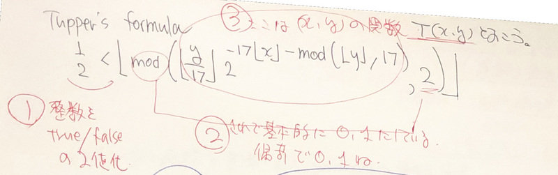

ZAF 2022 年 12 月 21 日
＜本日のテーマ＞
2022年の振り返り
数理クイズ２解答編
目次
- [6:30 - 7:00] 前座 2022年の振り返り
- [7:00 - 8:00] パート１ ZAF 2022年の振り返り
- [8:00 - 9:00] パート２ 数理クイズ２解答編
- 今日のおわりに
- 総合目次
YouTube のアーカイブ・ビデオはこちら
(
https://youtube.com/live/rr68RdOZXCY)

（前座）
2022年の振り返り
2022年の振り返り
- 今年は、いろいろとありましたね
- そんな１年を振り返りたいと思わないのだけれど、
前を向いて進むためにも、
振り返りたいと思います
（前座）
アンガーマネージメント
と
コミュニティ志向
- 2022 年という１年（365日）を振り返るとき、
残念なことではあるが
暴力
- 忘れないために、列挙しておく
- コロナ禍（３年目）
- ウクライナへのロシアの侵攻（２月下旬）
- 安倍晋三の暗殺（７月）
- 宮台真司が襲われる（１１月）
- 忘れないために、列挙しておく
- こうした状況に直面し、
このような暴力に、
自分として、どう対抗すればいいのか？

- とっさに出てきたのは「アンガーマネージメント」（？）
- でも、要するに、
（問題があると思われる）相手と同じ土俵に乗らない
- それって、こちら側に大きな努力が必要となることだけど
- だって、相手はガキのように、手段を選ばないモードに入ってるからねぇ……

最近のマイブームは
「仏教」
- そういえば（今年を振り返るという意味で）
ぼくの最近の（今年の？）マイブームは「仏教」です - ZAF-2207 でも言及してました
(https://twitter.com/ichiki_k/status/1549599666647445504)

- 音楽と数理 🎼 ♾ ポッドキャスト

- (S01E02) :
〈トーク〉最近の読書から – 意識と俳句と道元と


- (S01E14) :
〈トーク〉近況 – コンダラとアカデミアとワクチンと

- (S01E24) :
〈トーク〉復活、忙殺されず丁寧に生きること、技術書典１３、正法眼蔵と「竜とそばかすの姫」


- (S01E02) :
〈トーク〉最近の読書から – 意識と俳句と道元と
- 「怒りを観察することで乗り越える」
というのは、いわゆるひとつの
「アンガーマネージメント」
ですね


宮台真司
- で、宮台真司。
- 実は、今回の事件が起こる直前（１１月１７日の配信）、
たまたま以下のビデオをチラ見してた

（○ The News ● 自民と統一教会、経済敗戦、神なき時代 「クズ」にならずに、私たちはどう再生できるか【宮台真司・望月衣塑子・尾形聡彦】）- ここでの話は、いろいろと首肯することが多かった
- 大雑把にいうと、 ZENKEI AI FORUM でも何度も話題に挙げている
コミュニティ志向
- ぼくの、この方向に対する個人的なきっかけであった
瀧本哲史 の言ってるようなこととも似てるように感じられた
(ZAF-2206 でも触れた)

- その後、退院した後に出演した回も（流れとして）みた

（○ The News ● 宮台氏 緊急出演！言論界隈はビビっていないか 〜宮台氏襲撃事件、防衛費の倍増、1兆円増税、学術会議【宮台真司、青木理】） - 宮台が言ってたこと（うろ覚えで書き出すが）
- 彼は万年転校生で、転校するたびに学校で困ってたが、
困っている彼を助けてくれる人は、大抵、クラスの女の子だった - 表面的な付き合いしかできない人と、
本当に信頼できる人を、
きちんと見極めるスキルを磨くべき - これは、これまでの人生、孤軍奮闘してきた（させられてきた）身として、 ぼくも同感
- 彼は万年転校生で、転校するたびに学校で困ってたが、
- 最近のツイート
(https://twitter.com/ichiki_k/status/1603223126363754496)


- このツイートの主題は
自未得度先度他 （じみとくどせんどた）
みんな、読める？（分かる？）
- 別に引用したフレーズ
かつての知友は知らない顔をして通り過ぎてゆき、
どこの家のドアも開かない
- このツイートの主題は


（目次に戻る）
パート１
ZAF 2022年の振り返り
ZAF 2022年の振り返り
- ZAF202201 (link) （脱線）「同人誌」とは？／2022年の画像分類
- ZAF202202 (link) 技術書典１２まとめ / センター試験 数学 I に挑戦 / 久しぶりに Kaggle
- ZAF202203 (link) 最近の話題から ２０２２年春、ゲスト：ちゃんもりさん
- ZAF202204 (link) 最近の GAN すごい / Kaggle 🐳🐬コンペ、終わってた
- ZAF202205 (link) ZAM出します / 趣味のポッドキャスト / Let’s Dance!
- ZAF202206 (link) 技術書典１３企画会議！ - コミュニティ志向のビジネス最先端
- ZAF202207 (link) この一月の出来事-科学が社会に欠けている / AIの話題から / 技術書典１３企画会議！第２回
- ZAF202208 (link) 仕事が忙しかった / Stable Diffusion 革命 / 技術書典１３最終企画会議！
- ZAF202209 (link) 日常への回帰 / (Stable) Diffusion 完璧に理解するぞ！ / 技術書典１３お疲れさま座談会
- ZAF202210 (link) 出版業界 / 書き起こしAI "Whisper" / 数理クイズ / AlphaTensor
- ZAF202211 (link) 音のはなし / 数理クイズ解答編と出題 / Diffusion Model ちょっと分かります
- ZAF202212 〈本日！〉
(発表資料)
- （脱線）「同人誌」とは？
- これは『ZAM 季報 VOL.2』の
「【エッセイ】最近のオレはどこにむかっているんだろう？」
に「同人誌とは」という節にまとめました。


- これは『ZAM 季報 VOL.2』の
「【エッセイ】最近のオレはどこにむかっているんだろう？」
に「同人誌とは」という節にまとめました。
- 2022年の画像分類
- ViT (Vision Transformer), Swin Transformer
- ConvNeXt, EfficientNet V2, RegNet
- ZAP2201 は Seasn 25
- S25E01 （前座）コロナ、ポッドキャストの新方針、技術書典１２ (2022-10-19 12:00)
- S25E02 （脱線）「同人誌」とは？ (2022-10-26 12:00)
- S25E03 ２０２２年の画像分類、モデル編 (2022-11-02 12:00)
- S25E04 ２０２２年の画像分類、実践編 (2022-11-09 12:00)


(発表資料)
- 技術書典１２まとめ
- 新刊、出せませんでした
- 共通テスト 数学 I に挑戦
- 挑戦して、惨敗しました。
- その内容は『ZAM 季報 VOL.2』の
「【エッセイ】共通テストってどれほどのものよ？」
にまとめました。

- 久しぶりに Kaggle
- 難しい画像分類への応用として「ArcFace」について勉強
- ZAP2202 は Seasn 26
- S26E01 （前座）アーティストについて、技術書典１２のまとめ (2022-11-16 12:00)
- S26E02 （前座）2022年のセンター試験、数学 I に挑戦 (2022-11-23 12:00)
- S26E03 久しぶりに Kaggle に挑戦 (2022-11-30 00:00)
- S26E04 ArcFace - 難しい画像分類への応用として (2022-12-07 12:00)

(発表資料)
- 最近の話題から ２０２２年春
- NeRF についてのレビュー
- ゲスト：ちゃんもりさん
- 『メラノーマ疑惑のホクロをAIで診断してみた』
というタイトルで講演していただきました！

- 『メラノーマ疑惑のホクロをAIで診断してみた』
というタイトルで講演していただきました！
- ZAP2203 は Seasn 27
- S27E01 （前座）「共通テスト」の振り返り-正弦定理など (2022-12-14 12:00)
- S27E02 （前座）最近の学び-Jazzミュージシャンは精密 (2022-12-21 12:00)
- S27E03 最近の話題から 2022年春-NeRFなど (2022-12-28 12:00)
- S27E04 【ゲスト講演】メラノーマ疑惑のホクロをAIで診断してみた（ちゃんもりさん） (2023-01-04 12:00)
- S27E05【ゲスト講演】質疑応答という名の座談会 (2023-01-11 12:00)

(発表資料)
- （前座）「音楽と数理🎼 ♾ ポッドキャスト」
(https://anchor.fm/music-and-math)
はじめました

- 最近の GAN すごい
- DualStyleGAN などを紹介
- かんたんにアニメ顔になってみました
- その内容は『ZAM 季報 VOL.2』の
「【AI実践編】アニメ顔になってみよう！」
にまとめました。


- Kaggle 🐳🐬コンペ、終わってた


(発表資料)
- ZAM出します
- と、宣言だけは元気にしましたが、出せませんでした
- ちなみにその後、技術書典１３において、
『ZAM 季報 VOL.2』として、
いただいていた原稿はすべてリリースしました！


- 趣味のポッドキャスト
- いろいろ挑戦を続けています！

- いろいろ挑戦を続けています！
- Let's Dance!
- AI を使って、リアルアバターを使って、踊ってみた！
- その内容は『ZAM 季報 VOL.2』の
「【AI実践編】Let’s Dance!」
にまとめました。


- このとき YouTube に公開したビデオが二万回再生されました！


(発表資料)
- コミュニティ志向のビジネス最先端
- 「令和時代のコミュニティ志向な生き方」
- その内容は『ZAM 季報 VOL.2』の
「【エッセイ】コミュニティ志向と科学的視点」
にまとめました。


- 技術書典１３企画会議！
- 当日の企画会議の模様

- 当日の企画会議の模様


(発表資料)
- この一月の出来事-科学が社会に欠けている
- その内容は『ZAM 季報 VOL.2』の
「【エッセイ】コミュニティ志向と科学的視点」
にまとめました。


- その内容は『ZAM 季報 VOL.2』の
「【エッセイ】コミュニティ志向と科学的視点」
にまとめました。
- AIの話題から
- DALLE2 とか、なにやら始まりそうな予感が高まっている （のが、振り返ってみると感じられる）
- 技術書典１３企画会議！第２回
- AI 小説を書こう、とか言っている

- AI 小説を書こう、とか言っている


(発表資料)
- 仕事が忙しかった
- 実は７月、８月と仕事がめちゃくちゃ忙しかった
- ところで、このとき言ってた

ちょっとばかり押しておりますが、 この辺り(https://www.zenkei.com/media/technology-reports)を年末（年始？）ウォッチしていただければ、と
- （まだまだ、がんばり中ってことです）
- Stable Diffusion 革命
- ここ２ヶ月、忙しくしていた裏で、 世間では「Stable Diffusion 革命」が起こってた！
- その内容は『ZAM 季報 VOL.2』の
「【講演】Stable Diffusion 革命」


- 技術書典１３最終企画会議！
- 『ZAM 季報 VOL.2』１本にフォーカスすることに決定
- 河村さんから書き下ろし原稿が届きました！


(発表資料)
- 日常への回帰
- ７月、８月、９月と猛烈に忙しい３ヶ月から、
ゆっくりとだが日常に回帰しようとリハビリ中
- ７月、８月、９月と猛烈に忙しい３ヶ月から、
- (Stable) Diffusion 完璧に理解するぞ！
- 既に Diffusion Model のレビュー論文が出てる
- 技術書典１３お疲れさま座談会
- 新刊『ZAM 季報 VOL.2』出せました！
- 技術書典の企画「後から印刷」と「印刷費８０％キャッシュバック」から、
破格の「５００円」

- その後、
技術書典マーケットプレース『ZAM 季報 VOL.2』ZENKEI AI FORUM
での電子版は正規価格（？）７５０円になりました

- 新刊『ZAM 季報 VOL.2』出せました！


(発表資料)
- 出版業界
- Amazon で紙の本を出版してみました！
(https://www.amazon.co.jp/dp/B0BHG8GJDR)

- 「文学フリマ」の成り立ち、
大塚英志の「不良債権としての『文学』」 (「群像」2002年6月号)を知る。

- 「出版業界における DX」だったんだな、と思ったことと、
コミュニティ経済の動きと
- Amazon で紙の本を出版してみました！
(https://www.amazon.co.jp/dp/B0BHG8GJDR)
- 書き起こしAI "Whisper"
- ポッドキャストの「文字コンテンツ化」（書籍化）のツールになる！

- ポッドキャストの「文字コンテンツ化」（書籍化）のツールになる！
- 数理クイズ
- いわゆる「Tupper の公式」に関連して


- いわゆる「Tupper の公式」に関連して
- AlphaTensor
- DeepMind の新しい研究（Strassen を超えるはなし）

- DeepMind の新しい研究（Strassen を超えるはなし）


(発表資料)
- 音のはなし
- Gradient Descent で音を採る研究を読む


- WaoN を Python で実装

- Bill Evans を採譜

- Gradient Descent で音を採る研究を読む
- 数理クイズ解答編と出題
- Tupper の公式を使った暗号解読、解答編


- および、つづくクイズの出題

- Tupper の公式を使った暗号解読、解答編
- Diffusion Model ちょっと分かります
- Jeremy Howard の Fast AI の、今年のレクチャーのビデオが公開された


- 彼の「スクラッチから Stable Diffusion を作る」構想を聞き、
なんとなく分かってきた


- Jeremy Howard の Fast AI の、今年のレクチャーのビデオが公開された


（目次に戻る）
パート２
数理クイズ２解答編
- 問題


Tupper の公式の解説
（解答に代えて）
- スマートな解説は（柄ではないので）やりません
- それに、そういうのって、あんまり教育的価値がないと思うので
- ぼく自身が考えてみた順序で説明していきたいと思います
- 試行錯誤しながら取ってたノートのスクショから
- 全ての発端(https://twitter.com/fermatslibrary/status/1580856948873797633)

- この式を見た時の、素朴な疑問は
106 ってないの？ - ちなみに、生成されている画像のサイズが 106x17 ピクセル
- この式を見た時の、素朴な疑問は
- まずは、暗記問題ではないので、記号の定義から（コンピュータ屋さん向け）
\(\lfloor y\rfloor\) は floor(y) （下に丸める整数化）
\({\rm mod}(x, y)\) は x % y （商）
- まず、式全体を眺めてみる
 - （１） \(\frac{1}{2} < \lfloor F\rfloor\) というのは、
ある数 \(F\) を整数化したものを、 1/2 を境に二値化（あるいは boolean 化）する操作 - （２）その「ある数」とは \({\rm mod}(T, 2)\)
つまり、別のある数 \(T\) を２で割った余り、
つまり、 0 か 1 のいずれか（\(T\)の偶奇により） - （３）その \(T\) は変数 \(x, y\) の関数
- まとめると、この通称「Tupper の公式」というものは、
\(x, y\) を与えた時
\(T(x, y)\) の偶奇により
True or False となる
（それに応じて、白黒を塗り分けて絵を作る）
- （１） \(\frac{1}{2} < \lfloor F\rfloor\) というのは、
- 次に \(T(x, y)\) の中身を見ていこう
- まず、 \(2^{-z}\) を（分かりにくいので）分母に持ってくる
- （４）２の指数を \(z\) と置いて、こいつがどういうものかを考えてみる
- つまり \(z\) をポインタのアドレスのように考えると
（それに付随する２次元配列のインデックスは x, yy = y%17 は上のように与えられる）
いま注目している因子は、単に \(2^z\) ということになる - ２の階乗は、二進数表示で
- （５）
- （注）ノートには「p は y が 17 step 動く間１つの値」
と言ってるが
物事は「整数 p」を基準に考えて、
その 17 倍の値として便宜上 y が（式の上に）出てくる くらいに思えばよい - 実際 z の部分で見たように、
y よりも yy の方が本質的で、実際
y = p * 17, yy = y % 17
\(\Rightarrow\) p = yy
- 結論
- つまり、ある整数 p の二進数表示（ビット表示）して、
z ビット目を (x, yy) に並べる、というだけ - 対応表
p, z 表現 Tupper の公式の表現 p \(\lfloor \frac{y}{17}\rfloor\) だけど、隠れたパラメータ \(k\) があって、 \(y = k + \tilde{y}\) なので \(\lfloor\frac{k}{17}\rfloor\) z = x * 17 + yy \(17 \lfloor x\rfloor + {\rm mod}(\lfloor y\rfloor, 17)\) x \(\lfloor x\rfloor\) yy \(\tilde{y} = {\rm mod}(\lfloor y\rfloor, 17)\) - ということで、
Tupper’s self-referential formula
は「自己言及式」というものではない
（単なるビット列での白黒表現）
- それから、１つコメント
パラメータ \(k\) よりも
p \(= \lfloor\frac{k}{17}\rfloor\)
を使った方がいいですよね
- つまり、ある整数 p の二進数表示（ビット表示）して、
- ところで
マジックナンバー「１０６」がない問題は？
- 回答
ビット列を（マジックナンバーの）１７個ごとに（縦に）並べて行って、
興味あるところまでプロットすれば良いので、
必要はない！
- 実際 Tupper の公式のピクセルの並べ方は、
右上から縦に並べて、順に左にシフトしていく形になっていて、
ぼくのノートブックでの検算では１０６ピクセルじゃなくて （１つ余分に）１０７ピクセル描画していました
- 実際 Tupper の公式のピクセルの並べ方は、


正解者の発表！
- Atsushi さん！（二回連続です）

- furukawa さん


- 今回の賞品は？
年末、大サービス！
- （１）【印刷版】月刊 ZAM ３冊セット（2021年2月号、3月号、5月号）
- （２）【印刷版】ZAM 季報 VOL.1 （書き下ろしパート抜刷版）
- （３）【印刷版・本文モノクロ】ZAM 季報 VOL.2
- いずれか、ご希望の「ZAM」を、進呈いたします！（欲しいかな？）
- （ちなみに、その他の ZAM バージョンも BOOTH サイトでご購入いただけます）


{kind=link}
{kind=link}
{kind=link}
{kind=link}
{kind=link}
{kind=link}
{kind=link}
{kind=link}
{kind=link}
（目次に戻る）
今日のおわりに
……
今後の予定
- 次回 ZAF は 2023 年 1 月 25 日開催の予定です。
- ZAF 講演者、 ZAM 執筆者、絶賛、大募集中です！
お気軽にお問い合わせください！
総合目次
- 前座 2022年の振り返り
- 第１部
ZAF 2022年の振り返り
- ZAF202201 (link) （脱線）「同人誌」とは？／2022年の画像分類
- ZAF202202 (link) 技術書典１２まとめ / センター試験 数学 I に挑戦 / 久しぶりに Kaggle
- ZAF202203 (link) 最近の話題から ２０２２年春、ゲスト：ちゃんもりさん
- ZAF202204 (link) 最近の GAN すごい / Kaggle 🐳🐬コンペ、終わってた
- ZAF202205 (link) ZAM出します / 趣味のポッドキャスト / Let’s Dance!
- ZAF202206 (link) 技術書典１３企画会議！ - コミュニティ志向のビジネス最先端
- ZAF202207 (link) この一月の出来事-科学が社会に欠けている / AIの話題から / 技術書典１３企画会議！第２回
- ZAF202208 (link) 仕事が忙しかった / Stable Diffusion 革命 / 技術書典１３最終企画会議！
- ZAF202209 (link) 日常への回帰 / (Stable) Diffusion 完璧に理解するぞ！ / 技術書典１３お疲れさま座談会
- ZAF202210 (link) 出版業界 / 書き起こしAI "Whisper" / 数理クイズ / AlphaTensor
- ZAF202211 (link) 音のはなし / 数理クイズ解答編と出題 / Diffusion Model ちょっと分かります
- 第２部 数理クイズ２解答編
- 今日のおわりに